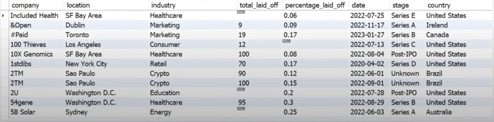

I developed a breast cancer prediction app using Python, Streamlit, and scikit-learn.
The app utilizes a logistic regression model, with data preprocessing and scaling done using
pandas and scikit-learn. I implemented interactive visualizations with Plotly and built
a user interface with Streamlit components like sliders. The model and scaler were serialized with
pickle, and the app was deployed on Streamlit Community Cloud.


In this project, I automated data retrieval from a cryptocurrency website's API using Python,
followed by data cleaning and exploration with pandas. Developed insightful visualizations with
seaborn to present the data trends and findings.

I worked on a data cleaning and exploratory data analysis project in MySQL for a company's layoffs dataset.
The process involved detecting and removing duplicates, standardizing formats, handling null values,
and correcting inconsistencies. I utilized advanced SQL techniques such as CTEs and window functions
for data manipulation. The EDA included aggregating and summarizing key metrics like total layoffs
by company, location, country, industry, and year.

I designed an interactive HR dashboard by integrating data from a real life dataset, performing data cleansing,
and creating calculated fields and parameters. I developed complex visualizations like line charts,
bar charts, and scatter plots to analyze employee turnover, demographics, and salary trends.
The project involved implementing advanced filters, custom navigation, and dashboard actions to enhance
user interactivity, optimize performance, and deliver data-driven insights for decision-making.
.png)
I developed an interactive dashboard to analyze Netflix's TV shows and movies dataset with over 6,000 records
and 12 fields. The project involved creating visualizations like area charts for content count by date,
maps for movie releases by country, and bar charts for content distribution by type and ratings.
I implemented filters for dynamic data exploration, formatted the dashboard layout for clarity,
and integrated custom elements such as the Netflix logo. The dashboard allows users to explore detailed insights,
including descriptions, ratings, and durations of individual titles.

I built an interactive dashboard using Power BI with survey data on data professionals.
I imported, cleaned, and transformed the data, then created visualizations including bar charts,
treemaps, and gauges to display salary averages, programming language preferences, and work-life balance.
The project focused on effective data cleaning, DAX calculations, and dashboard formatting
for clear insights and a polished user interface.

In this Excel project, I created an interactive dashboard from a bike buyers dataset.
Key tasks included data cleaning (removing duplicates and standardizing entries), using pivot tables
for data summarization, and building visualizations like charts. The dashboard featured interactive slicers
and filters for dynamic exploration, showcasing advanced Excel skills and dashboard creation techniques.